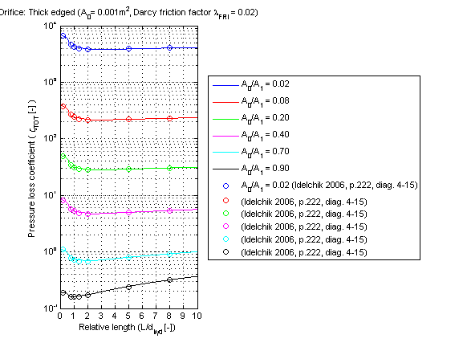
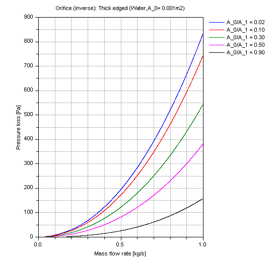

This function shall be used within the restricted limits according to the referenced literature.
The pressure loss dp for a thick edged orifice is determined by:
dp = zeta_TOT * (rho/2) * (velocity_1)^2
with
| rho | as density of fluid [kg/m3], |
| velocity_1 | as mean velocity in large cross sectional area [m/s], |
| zeta_TOT | as pressure loss coefficient [-]. |
The pressure loss coefficient zeta_TOT of a thick edged orifice can be calculated for different cross sectional areas A_0 and relative length of orifice l_bar =L/d_hyd_0 by:
zeta_TOT = (0.5*(1 - A_0/A_1)^0.75 + tau*(1 - A_0/A_1)^1.375 + (1 - A_0/A_1)^2 + lambda_FRI*l_bar)*(A_1/A_0)^2 [Idelchik 2006, p. 222, diag. 4-15]
with
| A_0 | cross sectional area of vena contraction [m2], |
| A_1 | large cross sectional area of orifice [m2], |
| d_hyd_0 | hydraulic diameter of vena contraction [m], |
| lambda_FRI | as constant Darcy friction factor [-], |
| l_bar | relative length of orifice [-], |
| L | length of vena contraction [m], |
| tau | geometry parameter [-]. |
The geometry factor tau is determined by [Idelchik 2006, p. 219, diag. 4-12]:
tau = (2.4 - l_bar)*10^(-phi)
phi = 0.25 + 0.535*l_bar^8 / (0.05 + l_bar^8) .
The pressure loss coefficient zeta_TOT of a thick edged orifice in dependence of a relative length (l_bar = L /d_hyd) with different ratios of cross sectional areas A_0/A_1 is shown in the figure below.

Incompressible case [Pressure loss = f(m_flow)]:
The pressure loss DP of an thick edged orifice in dependence of the mass flow rate m_flow of water for different ratios A_0/A_1 (where A_0 = 0.001 m^2) is shown in the figure below.

And for the compressible case [Mass flow rate = f(dp)]: